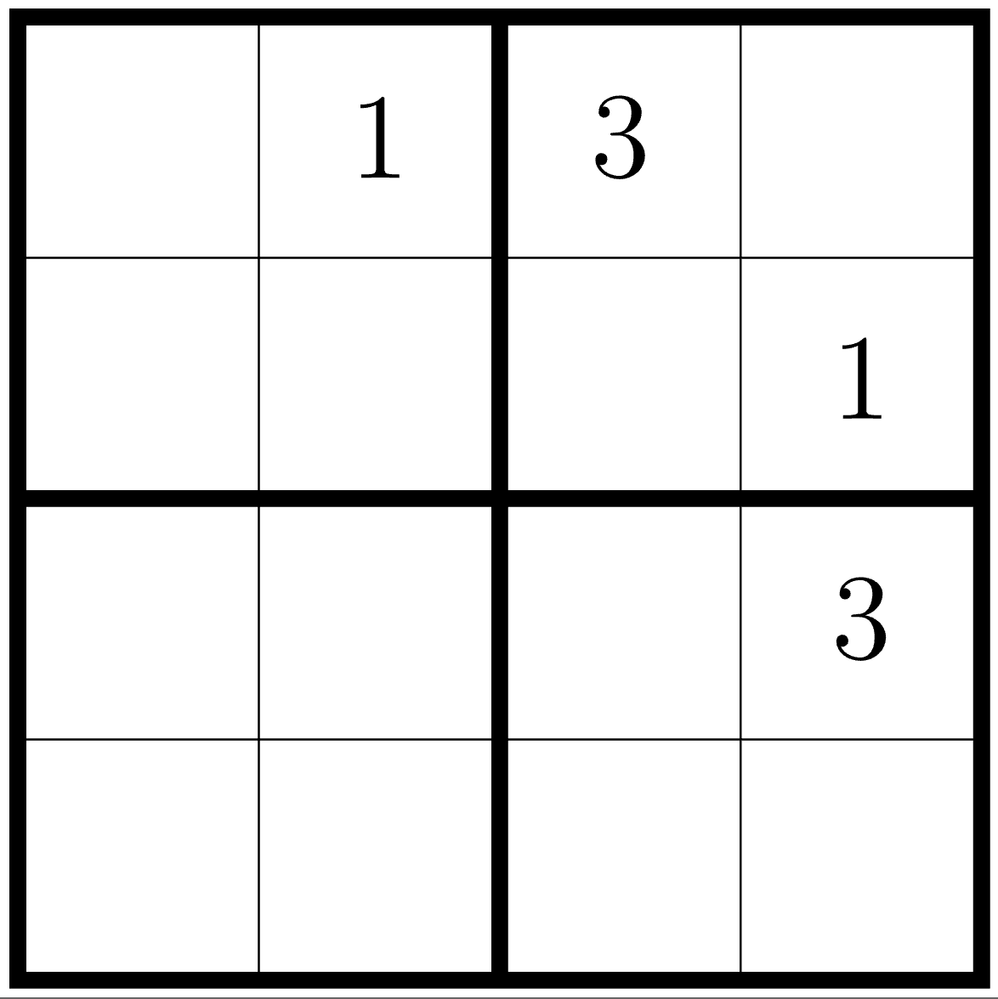
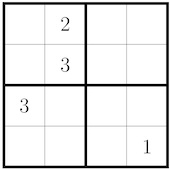

Lecture 11, DSCI 220, 2026W1
Is the converse true? Is every perfect square a glow number?
In a 4x4 Sudoku, each row, each column and each 2x2 box contains each of 1, 2, 3 and 4 exactly once.
Solve the Sudoku on the worksheet.
Speculate on an interesting feature of the corners.
Do all 4x4 Sudoku puzzles have this feature?
Do all 4x4 Sudoku puzzles have THIS feature?
Prove that for any solution to this mini sudoku, if the solution has a 2 in the top-left square (r1c1), then it has a 2 in the bottom-right square (r4c4).

Theorem: For any valid Sudoku solution, if A and B and C are not 4, then D is 4.
Contrapositive:
Prove that any solution to this mini sudoku has a 3 in the top-right corner (r1c4).

A Tower is built by stacking 5m red panels, and 7m blue panels.
What tower heights are possible? Talk it through with the people around you: which heights can you build, and which can’t you?